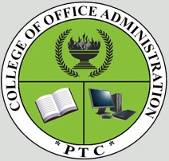
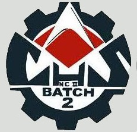

Brief Historical Background As early as July 22, 1991 , the then Mayor Jose T. Capco, Jr. filed a letter of Intent to the Department of Education Culture and Sports- National Capital Region for the establishment of a community college in Pateros. The recommendation is supported by resolutions of the Pateros Municipal Council, Secretaries and Treasurers. A nine-man Special committee was then formed to help establish the college with the target to open classes in June 1992. The special committee agreed the college be named PATEROS TECHNOLOGICAL COLLEGE (PTC) since it would offer technical vocational courses. The special body was tasked was tasked with individual assignments from the marketing aspects, feasibility study, the PTC logo, and survey of probable instructors, financial sponsorship, and the source curriculum and facilities requirements. PTC started operation on August 16, 1993. The college initially set up short-term and two-year computer courses with the help of a professional group, the Systematrix Computer Education and Services, Incorporated that provided the curriculum and its teaching staff. And in response to the over-growing educational needs of the community it serves, PTC, led by the former Mayor Jose T. Capco, Jr. and the PTC Board of Trustees had undertaken innovative steps towards the expansion of its technical-vocational education program and services in partnership with the Technological University of the Philippines (TUP), a state educational constitution of higher learning in both industrial and educational pedagogy and technological education. Also, PTC, shall be developed as a venue for under graduate off-campus programs of TUP.
The Pateros Technological College envisions itself as an institution of higher learning which is strongly committed to the holistic development of the students to improve their lives in particular and the society in general.
The Pateros Technological College commits itself to: Provide quality higher education thru specialized professional instruction; Provide training in scientific, technological, industrial and vocational fields; Enhance moral and spiritual values; Instill the love of country and appreciation of our cultural heirtage Promote environmental awareness and unconditional love for mother earth; Offer educational opportunities especially to marginalized individuals; Heighten students creativity and leadership thru extra and co-curricular activities and Produce quality graduates adept with technological skills and professional education.
Bachelor of Science in Information Technology (BSIT) is a four -year degree program that focuses on computers and technology.It primarily aims to equipped students to the fast emerging needs of IT industry by instructing them on the principles of computer hardware and software components, algorithms, databases, telecommunications, user tactics, web developments, application testing, and computer graphics. Therefore, be well-prepared upon applying for IT support business processes.
 Bachelor of Science in Office Administration (BSOA) is a four-year degree program where the students are prepared to carry out administrative tasks which contribute to the business industry after finishing the required courses for the program. Students are trained to be Clerical Supervisors not only Executive Secretaries that includes training coordination and create and implement staff policies. It provides a strong academic learning for personality development within the profession. Thus, employment is on dependent on the fortunes of the economy. A well-qualified, competitive and experienced office staff will be a demand for many job opportunities.
Certificate in Computer Science (CCS) is a two-year non-degree program that provides education emphasizing software development, computer graphics, artificial intelligence, high performance computing architecture and games programming. All these are learned from introduction to computing and basic algorithm courses to practicing major programming languages for information and communication technologies development.
Certificate in Office Administration (COA) is a two-year non-degree program where the students are prepared to carry out administrative tasks which contribute to the business industry after finishing the required courses for the program. Students are trained to be Clerical Supervisors not only Executive Secretaries that includes training coordination and create and implement staff policies. It provides a strong academic learning for personality development within the profession. Thus, employment is on dependent on the fortunes of the economy. A well-qualified, competitive and experienced office staff will be a demand for many job opportunities.
 Certificate in Computer Hardware and Servicing (NCII) is a two-year non-degree program that provides students a theoretical and technical education.Students shall learn to diagnose and troubleshoot problems in various types of personal computer systems, software, and replacing parts to get the system back to its normal operation.
Certificate in Hotel and Restaurant Management (CHRM) is a two-year non-degree program offering students a hands-on education on the administrative business aspects of restaurant management. It includes courses namely, food service cost control, sales in food service and calculations of food service operations. Therefore prepares the students to apply for a job in the food service, restaurant management and lodging industries.